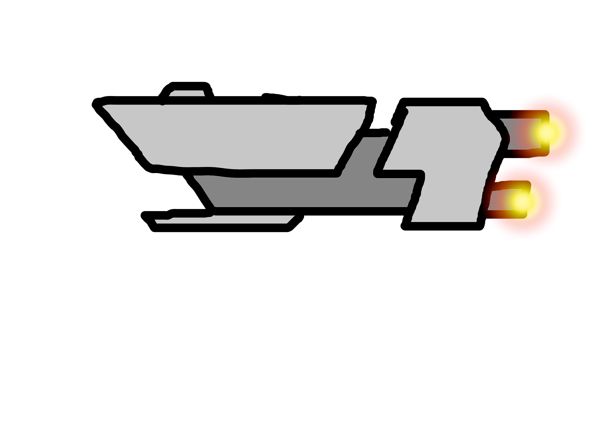
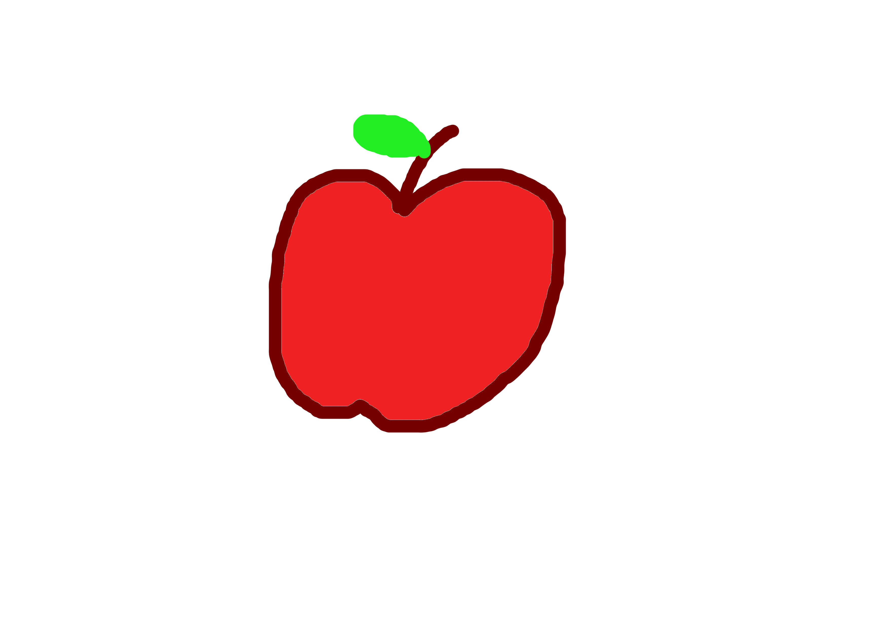

About Us
Compiler University
Welcome to Compiler University — where mind imagination can become into creation.



Founded in 2001, Compiler University has become a beacon for aspiring artists, designers, and visual storytellers from around the world. Nestled in the heart of a vibrant arts district, our campus thrives on creativity, innovation, and the belief that art is both a personal expression and a powerful tool for change.
- Our Mission
At Compiler University, our mission is simple: to empower the next generation of artists to shape the world through visual culture. We nurture raw talent, refine creative skills, and foster a lifelong commitment to artistic exploration. Whether our students are painting on canvas, designing immersive digital worlds, or shaping the future of visual communication, we provide the resources and mentorship to make their visions a reality.
We had offered a range of undergraduate and diploma programs in fields such as:
> Illustration & Concept Art
> Animation & Motion Graphics
> Drawing Tool Development (AI-Assisted Art Tool Development)
> Game Art & Interactive Media Illustration
Every program at the Compiler University is structured to balance technical proficiency with artistic growth. Our curriculum blends studio-based learning with critical theory, encouraging students to think deeply about the impact of their work.
- World-Class Faculty
Our instructors are practicing artists, award-winning designers, film and game professionals, and published scholars. More than teachers, they are mentors who guide students through hands-on projects, exhibitions, internships, and real-world collaborations. Small class sizes ensure personalized feedback and lasting connections.
- Facilities & Studios
Creativity deserves space to grow. Our campus features:
> Spacious, light-filled art studios
> Industry-standard animation and editing suites
> A state-of-the-art digital fabrication lab
> Mac labs with the latest design and editing software
Art doesn’t happen in isolation. At Compiler University, we foster a collaborative environment where students across disciplines work together on exhibitions, performances, games, short films, and experimental installations. We host regular gallery nights, guest lectures from renowned creatives, and cross-institutional projects with tech and design schools globally.
Diversity is at the core of who we are. With students from over multiple states in Malaysia, we celebrate unique perspectives and cultural exchange. Our inclusive environment ensures that every voice is heard — and every story matters.
- Careers & Beyond
Graduates of Compiler University are found in creative studios, game companies, film production houses, museums, advertising agencies, and independent practices across the globe. Our dedicated Career Services team offers:
> Portfolio and CV reviews
> Internship placements
> Industry panels and job fairs
> Alumni networking events
We believe success looks different for every artist — whether it’s working at a major animation studio, launching an indie game, or hosting a solo exhibition. Our job is to help you define and reach your version of success.
- Visit Us
There’s only one way to truly experience Compiler University: come see for yourself. We invite prospective students, parents, and educators to tour our campus, attend student showcases, and speak with our faculty. Virtual open houses are also available for international applicants.
Whether you’re a painter, a pixel artist, or something in between, there’s a place for you at Compiler University. Let’s shape the future of creativity — together.
Return to Home